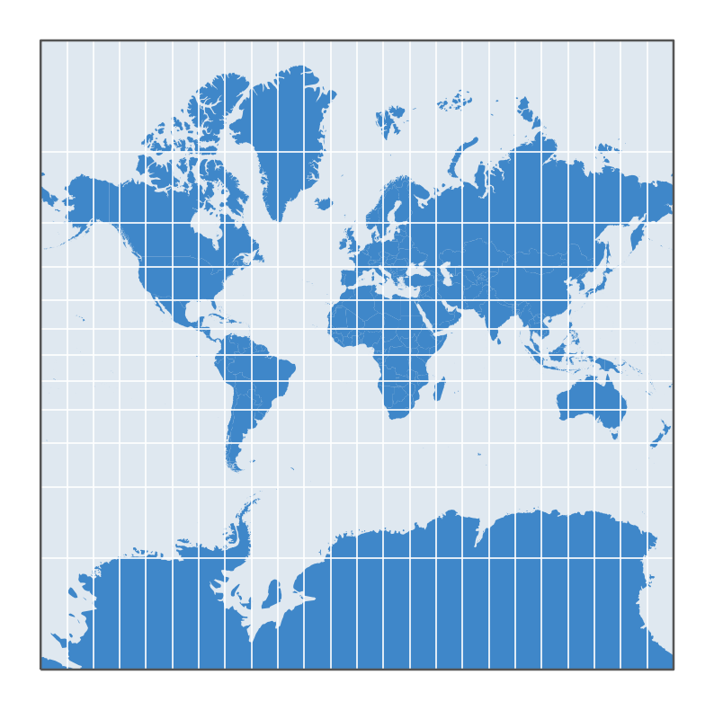
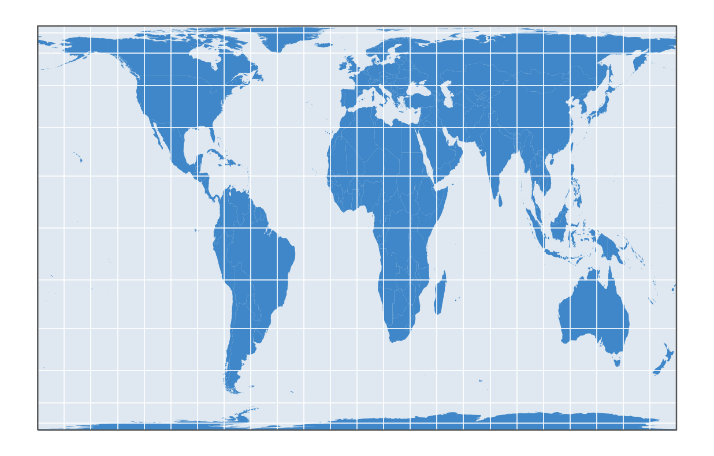
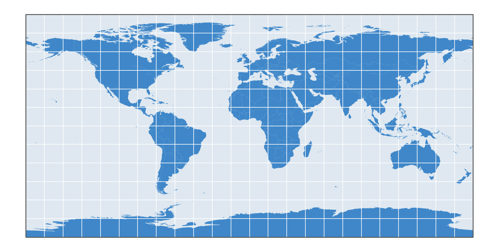
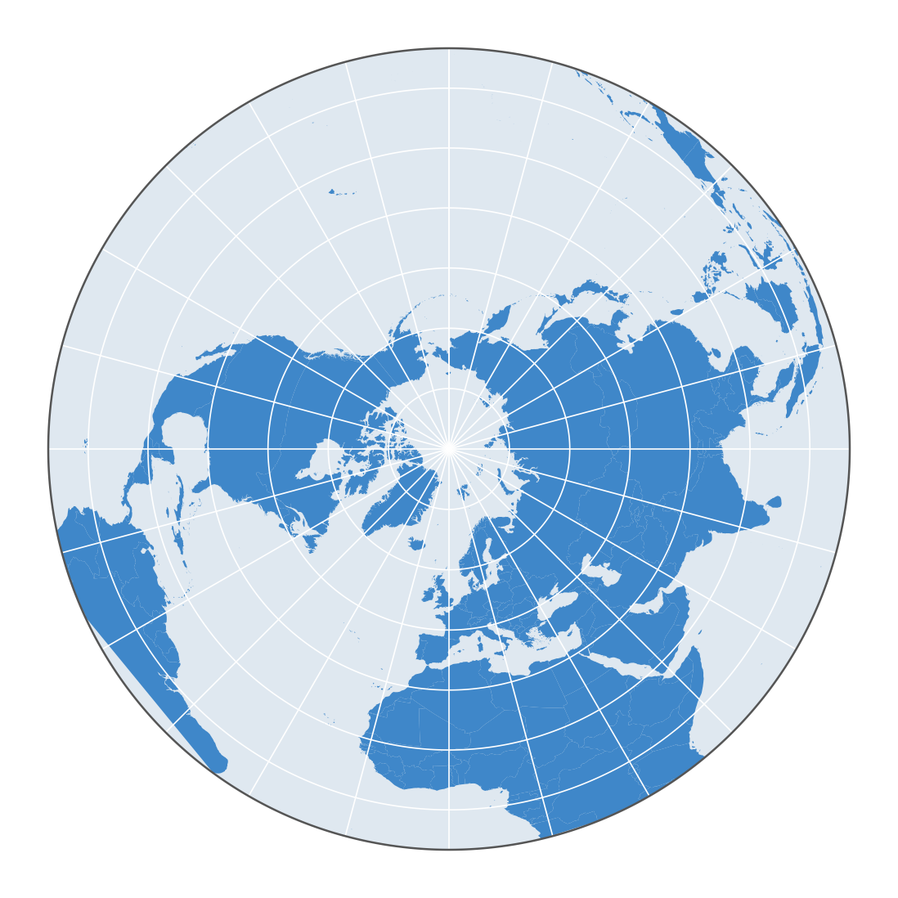

5.1.2 Projected coordinate systems
Two-dimensional: projections
As you saw in the part about geographic coordinate systems, the Earth, or part of it, can be represented as a simplified three-dimensional object. You can also show the Earth as a map on a ‘flat’ surface, such as paper or a screen.
These flat or two-dimensional representations of the Earth are easier to produce and store. They can also show all sides of a spherical object in one image, whereas a three-dimensional representation always has a hidden side. In addition, geometric calculations (such as distances and areas) are much easier in two dimensions than in three.
This video by Vox shows why every flat world map distorts: Why all world maps are wrong.

To represent the surface of the Earth (and other spherical objects) in two dimensions, you use projections. A map projection uses a mathematical method to convert geographic coordinates on a reference ellipsoid into coordinates on a two-dimensional plane.
It is impossible to represent a sphere or ellipsoid in two dimensions without distortion. That is why a wide range of projection methods has been developed. All of them distort, to a greater or lesser degree, at least some of the true shapes, directions, distance ratios and area ratios of the map elements they show.
Differences between projections
Projection surface
A projection can be made onto different projection surfaces. Below, we briefly show which ones.
In a cylindrical projection, the Earth is projected onto a cylinder placed around it. Afterwards, the cylinder is ‘unrolled’ into a flat surface.

When the projection is made onto a cone, it is called a conic projection. Here too, the cone is ‘unrolled’ into a flat surface afterwards. This method is often used for areas between the tropics and the polar circles.

When the projection is made directly onto a flat plane, it is called an azimuthal projection.

Standard line
The projection surface can either just touch the Earth’s surface or cut through it. The line or point where the projection surface touches (or cuts) the Earth is called the ‘standard line’ or the ‘standard point’. A cylinder or a cone touches the Earth along one line, and a flat plane touches it at one point. When they cut the Earth, a cylinder or a cone does so along two lines, and a flat plane along one line. Along a standard line or at a standard point, there is no local projection distortion. Distortion generally increases as you move away from these locations.

Orientation
The orientation of the projection surface relative to the Earth can also vary: neither the projection surface nor the base of the cylinder or cone has to be parallel to the equator.

Position of the projection centre
Finally, the position of the projection centre can also differ.

Do not worry if a projection does not fit any of the types described above. In practice, many map projections do not correspond directly to one of these geometric types. They are defined mathematically and may be based on a geometric projection that has been adjusted, for example to reduce certain distortions.
Projection distortions
As mentioned above, it is impossible to show a sphere in two dimensions without distortion, so no map projection is perfect. The distortions can affect shape, direction, area and distance, and the amount of distortion varies with the position on the map. Different projection methods cause different distortions, so the best method depends on the context. Projections are often grouped according to the distortions they do (or do not) cause.
Conformal projections (angles)
Conformal projections preserve shapes locally: in other words, angles are not distorted.
The Mercator projection is probably one of the best-known examples. Gerard Mercator developed it specifically for navigation. Because the Mercator projection preserves angles locally and shows the meridians as parallel straight lines, a straight line on the map represents a route with a constant compass bearing. Navigators could follow this line to reach their destination, but usually not by the shortest route.

Conformal projections do not preserve area, and they generally do not preserve distances. In the Mercator projection above, where the standard parallel is the equator, these distortions increase towards the poles.
To see how strongly the Mercator projection enlarges areas towards the poles, try https://thetruesize.com: drag a country towards the equator or the poles and watch its size change.
Equal-area projections (area)
Equal-area projections preserve area ratios. This type of projection can be useful for showing the continents and their relative sizes.
An example is the Gall-Peters projection, which is used by organisations such as UNESCO and Oxfam.

Equal-area projections generally distort shapes and distances.
Equidistant projections (distance)
Equidistant projections preserve distance ratios, at least in one direction or relative to one or two points. No map can preserve the distance ratios between all points.
A widely used equidistant projection is the ‘plate carrée’ or ‘equidistant cylindrical projection’. It preserves distance ratios in the north-south direction (along the meridians) and along the equator, but not in other directions.

Equidistant projections are usually neither equal-area nor conformal.
Compromise projections
Some projection methods have none of the three properties above: they distort angles, distance ratios and area ratios. These are sometimes called compromise projections. They usually aim for the best possible aesthetic result and/or the smallest possible distortions of all three, without being fully correct for any one of them.
A well-known example is the Robinson projection, which National Geographic, among others, used for its world maps for many years.

Azimuthal
Because azimuthal projections use a flat plane as projection surface, they have some useful properties. They preserve the true directions from the central point of the map to every other point, and a straight line from this central point shows the shortest route. In gnomonic azimuthal projections, this last property applies to all points on the map: a straight line between any two points shows the shortest route between them on the real Earth, which is useful for navigation.

Azimuthal projections can also be conformal, equal-area or equidistant, but only one of these at a time.
Projected coordinate reference systems
To place map elements unambiguously on a flat map, you use projected coordinate reference systems. These systems differ from each other in several respects.
- A map projection uses a mathematical/geometric formula to convert geographic coordinates on a reference ellipsoid to a flat surface.
- So every projected coordinate system is based on a chosen geodetic datum (and not on the real world, which, as explained on the previous page, cannot be represented exactly by a simple mathematical shape).
- This formula, in short the projection method, can also vary, as we have seen.
- The result is a two-dimensional representation of the Earth in which a coordinate system positions the map elements with an x and a y coordinate.
- The position of the origin (0, 0) can differ from one CRS to another.
- The unit of measurement varies between coordinate systems. A widely used unit is the metre: the coordinates then tell you how many metres east/west and north/south of the origin an element lies.

Globe: NASA Blue Marble: Next Generation (public domain). Right: Belgian Lambert 72 on Sentinel-2 cloudless 2016 by EOX IT Services GmbH (contains modified Copernicus Sentinel data 2016), CC BY 4.0. Border of Belgium: Atlas van België (NGI, ADSEI, ULiège).
Many different projected coordinate systems have been developed to limit distortions as much as possible, often specifically for a particular region.
In practice, this means choosing:
a geodetic datum that fits the real Earth’s surface closely in that area
a projection method that gives the smallest distortions for that specific area
an origin that gives convenient coordinates in that area (for example, only positive values)
Lambert
For maps of Belgium, two projected coordinate systems are mainly used: Lambert 72 and Lambert 2008. Both are designed specifically for this country and are therefore not suitable for areas far away from it. Much of the data you will come across for Belgium is in the older system, ‘Lambert 72’ (EPSG:31370; in QGIS: BD72 / Belgian Lambert 72): for a long time, it was the standard. However, more and more geographic datasets in Belgium are now managed and published in the newer system, ‘Lambert 2008’ (EPSG:3812; in QGIS: ETRS89 / Belgian Lambert 2008).
Both systems:
are based on a conic projection (with a cone that cuts the reference ellipsoid along two standard lines)
have an origin outside Belgium, to the south-west (a different one for each system): for Lambert 72 in the north of France (Oise), for Lambert 2008 much further away, in the Atlantic Ocean off the west coast of France
have coordinates expressed in metres.
Coordinate system of the QGIS project explains how to set the coordinate system of your project, for example Lambert 72 or Lambert 2008.


Left: the cone of Lambert 72 cuts the Earth along the two standard parallels, 49°50’ and 51°10’. Right: Belgium in Lambert 72, to scale. Border of Belgium based on Atlas van België (NGI, ADSEI, ULiège).